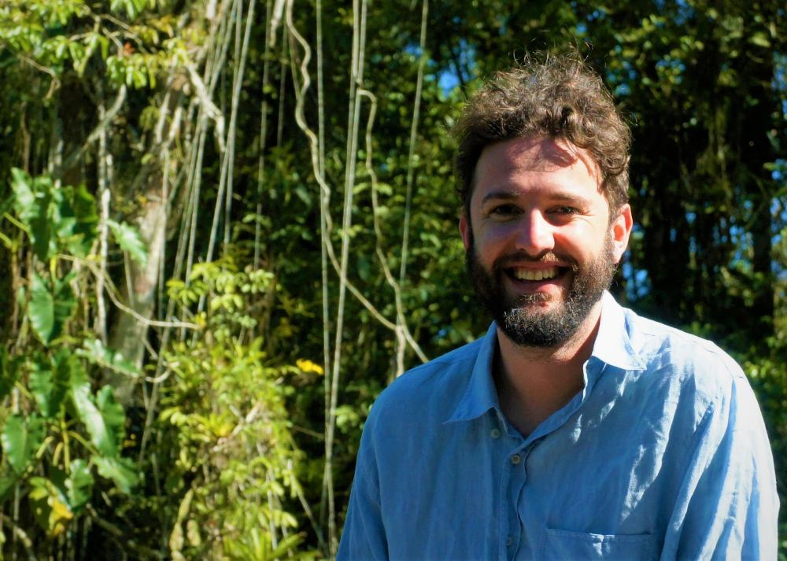
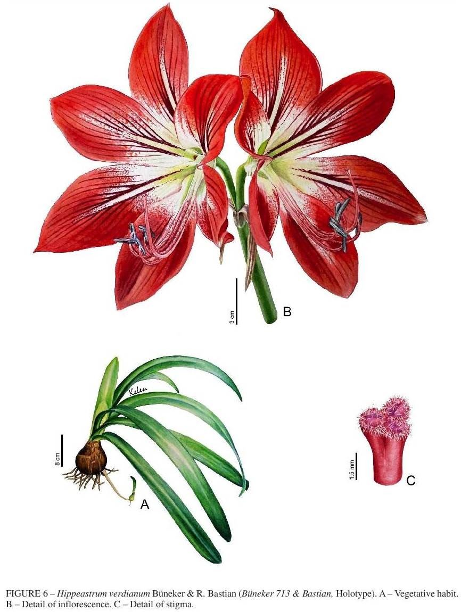
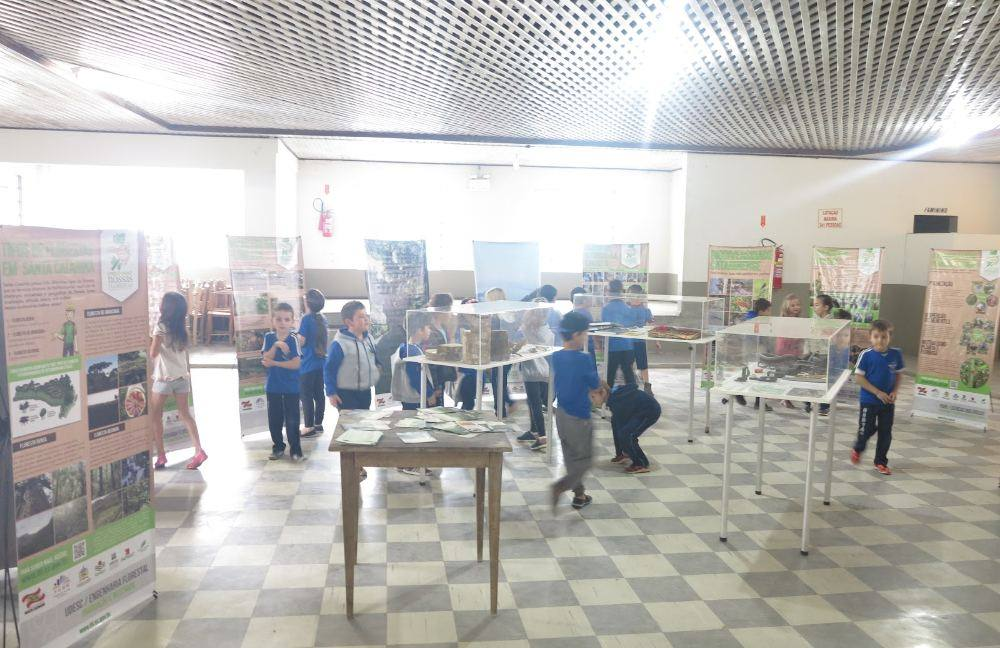
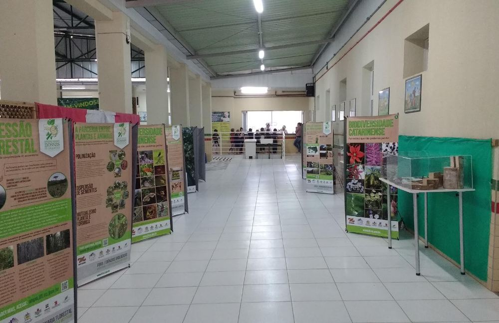
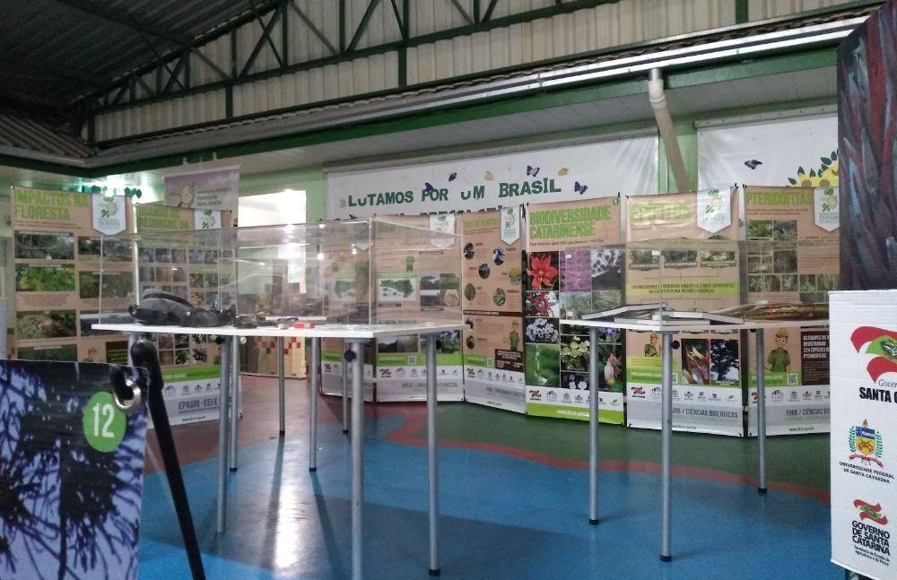
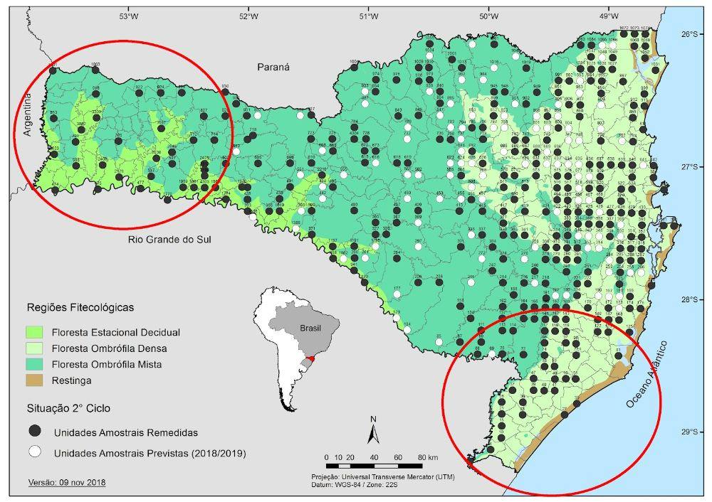

IFFSC firma acordo com a NASA
Quinta, 13 Dezembro 2018
O IFFSC firmou um acordo de intercâmbio de dados com a NASA, a Agência Espacial dos EUA, válido para duas novas missões espaciais, a GEDI Mission (Global Ecosystem Dynamics Investigation Lidar), liderada pela Universidade de Maryland, e a NISAR Mission, com tecnologia desenvolvida pelo California Institute of Technology (Caltech), Universidade na qual está instalado o Jet Propulsion Laboratory da NASA.
A parceria consiste numa troca de produtos, onde os dados de campo do IFFSC serão usados para calibrar os sensores orbitais das missões citadas. Em contrapartida, o IFFSC terá acesso privilegiado aos dados de sensoriamento remoto destas missões.
A GEDI Mission, lançada em 5 de dezembro deste ano, é pioneira porque pela primeira vez coloca em órbita, mais especificamente a bordo da Estação Espacial Internacional (ISS), um potente laser scanner com tecnologia LiDAR. Até o presente momento, sensores LiDAR são usados apenas a bordo de aeronaves. Este sensor permitirá monitorar detalhadamente o ciclo dos estoques do carbono terrestre, com foco nas florestas, e modelá-lo diante de cenários de mudanças climáticas.
A missão NISAR colocará em órbita em 2022 um satélite com um sensor RADAR na banda L, dedicada à captura de dados especificamente de florestas secundárias. Estas têm estoque de biomassa relativamente baixo (menor que 150 toneladas por hectare), mas são relevantes porque tem alto potencial de fixação de carbono atmosférico, uma vez que estão em fase de crescimento e, com isso em fase de acúmulo de biomassa (cerca de 50% da biomassa seca das florestas é constituída por carbono).
Os dados do IFFSC são internacionalmente reconhecidos pela sua consistência, detalhamento, qualidade, abrangência espacial e atualização periódica; constituem o maior banco de dados de inventário florestal de regiões tropicais/subtropicais no hemisfério Sul fora da Austrália”, comenta o professor Vibrans.
Por esta razão, os dados são demandados por pesquisadores como os ligados aos projetos da NASA, à Global Forest Biodiversity Initiative (www. gfbinitiative.org), à sPlot Global Vegetation Database (www.idiv.de), Neotropical Tree Communities database (TreeCo, USP), entre outros. Teses de doutorado utilizando o banco de dados do IFFSC são desenvolvidos na FURB (Daniel A. da Silva), UFRGS (Rodrigo Bergamin, Arthur Rodrigues), UFPR (Júlio Bastos), University of Reading (Inglaterra, Oliver Wilson), entre outros.
Texto retirado de: Notícias - FURB.
Dados do IFFSC compõem base global de parcelas de vegetação
Segunda, 26 Novembro 2018
Estudar comunidades vegetais em escala global é uma tarefa difícil e só tem condições de ser realizada se pesquisadores em diversas partes do mundo estiverem dispostos a colaborar e disponibilizar os seus dados. Essa foi a iniciativa do sPlot, um consórcio de pesquisadores que tem como objetivo compilar dados de parcelas de vegetação ao redor do mundo para permitir estudos em escala global. O sPlot possui atualmente dados de 1,1 milhões de parcelas de vegetação, dentre elas estão as parcelas do IFFSC.

Arthur Rodrigues, pesquisador do IFFSC e coautor da publicação Global trait–environment relationships of plant communities.
Na semana passada, saiu o primeiro resultado dessa parceria global: o estudo Global trait–environment relationships of plant communities, publicado na revista científica Nature Ecology & Evolution. O trabalho investigou a relação entre as características funcionais de comunidades de plantas e as condições ambientais, principalmente condições climáticas. Esperava-se que condições climáticas como temperatura e precipitação fossem bons preditores de características das comunidades de plantas, como densidade de madeira e investimento em tecido foliar, por exemplo. Contudo, temperatura e precipitação não foram capazes de predizer nenhuma das características funcionais utilizadas no estudo. Isso levou os autores a concluir que trata-se de um efeito de escala. Isso significa que as condições ambientais em escala local (de 1.000 a 10.000 m²) podem ser mais importantes na determinação das características funcionais das comunidades vegetais. Esses resultados têm implicação na construção de modelos de dinâmica global de vegetação que deverão considerar características locais, como fragmentação, relevo e solo para predizer comunidades em escala fina.
Um dos pesquisadores do IFFSC, Arthur Rodrigues, foi coautor do trabalho. Ele salienta a importância do projeto IFFSC para o entendimento da ecologia vegetal em escala global. “Dentre as parcelas do sPlot, as parcelas do IFFSC representam a maior área amostral de vegetação do Brasil. O investimento feito pela FAPESC no projeto IFFSC é fundamental para que possamos conhecer a vegetação de Santa Catarina, e permitiu que contribuíssemos para o avançar no conhecimento da vegetação global”, disse Rodrigues.

Hippeastrum verdianum
Nova espécie descoberta em SC
Sexta, 23 Novembro 2018
Hippeastrum verdianum, da família Amaryllidaceae, foi coletada durante o 1° Ciclo do IFFSC, em 2010. A coleta foi realizada pelo biológo Márcio Verdi, nas escarpas da Serra Geral, próximo a uma cachoeira, a 550 m a.s.l.
O nome da espécie foi criado em homenagem ao Márcio Verdi e a espécie foi descrita por Henrique Mallmann Büneker e Regis Eduardo Bastian, na revista Balduina. Esta revista pertence ao Herbário do Departamento de Ciências Florestais, da Universidade Federal de Santa Maria.
Outras espécies novas já haviam sido registradas em Santa Catarina, em virtude dos trabalhos do IFFSC. A descoberta de mais uma espécie nova, reforça ainda mais a importância das coletas botânicas realizadas no IFFSC.
Confira a publicação sobre a nova espécie: Taxonomic novelties in southern Brazilian Amaryllidaceae –IV: Hippeastrum correiense (Bury) Worsley, the correct name of the famous H. morelianum Lem.; and H. verdianum, a new species from Santa Catarina
Percorrendo as escolas do Alto Vale
Terça, 13 Novembro 2018
A Exposição Itinerante NOSSAS FLORESTAS está passando nas escolas do Alto Vale do Itajaí!
Em cada escola visitada pelo IFFSC, a exposição permanece em torno de uma semana, de modo que alunos de todas as turmas e turnos possam ter a oportunidade de prestigiá-la. Os alunos podem ter acesso à informações sobre temas variados como: tipos de plantas, usos da floresta, interação entre plantas e animais, situação das florestas catarinenses, dentre outros. Professores, em especial de biologia e geografia, têm conduzido os alunos à exposição durante suas aulas, para complementar assuntos abordados em sala.
Escolas dos municípios de Rio do Oeste e Laurentino já foram visitadas pelo IFFSC:
- E.E.B. Vereador Alfredo Scottini (Rio do Oeste): 23 – 26 Outubro 2018
- E.E.B. Estadual Mário Nardelli (Rio do Oeste): 26 Outubro – 1 Novembro 2018
- E.E.B. Estadual Tereza Cristina (Laurentino): 6 – 13 Novembro 2018
Esta semana, a exposição está na escola E.E.B. Maria Regina de Oliveira, no município de Agronômica, onde permanecerá até o dia 21 de novembro. Em seguida, a exposição deverá ser conduzida para a escola E.E.B. Prof. Henrique da Silva Fontes, no município de Rio do Sul.
Mais informações sobre a Exposição Itinerante, acesse aqui.
Interessado em receber a exposição ‘Nossas Florestas’? Entre em contato conosco: inventarioflorestal.sc@gmail.com ou pelo telefone (47) 3221-6040.

E.E.B. Vereador Alfredo Scottini

E.E.B. Estadual Mário Nardelli

E.E.B. Estadual Tereza Cristina
2° Ciclo: medições nos extremos Sul e Oeste de SC concluídos
Até o momento, 74% do levantamento do 2° Ciclo de Medições do IFFSC já foi concluído. Isso corresponde a um total de 311 Unidades Amostrais remedidas (círculos pretos do mapa). Para concluir o levantamento, restam ainda 110 Unidades Amostrais (círculos brancos do mapa).
Em algumas regiões do estado de Santa Catarina, como o Extremo Sul e o Extremo Oeste (destaque em vermelho no mapa), todas as Unidades Amostrais já foram remedidas.
A Floresta Estacional Decidual (FED), formação florestal situada no oeste do estado, está praticamente toda reamostrada, faltando apenas quatro Unidades Amostrais. Com a finalização do levantamento na FED, que deverá ocorrer ainda neste mês, as primeiras análises de dinâmica do crescimento da floresta poderão ser iniciadas.
Acompanhe aqui a atualização semanal do andamento das atividades do 2° Ciclo.
Sexta, 09 Novembro 2018

Mapa das Unidades Amostrais Remedidas e Previstas no 2° Ciclo. Versão do mapa: 9 nov. 2018
Da esquerda para direita: Adilson Luiz Nicoletti, Artur Bizon, Daniel Augusto da Silva, Murilo Schramm da Silva e Marcus Boeno.
Summer School 2018 em Campo Grande (MS)
Segunda, 05 Novembro 2018
A quarta edição do evento “IEEE/GRSS-Young Professionals & ISPRS WG V/5 and Student Consortium Summer School” ocorreu entre os dias 29 de outubro e 1° de novembro. Este evento é organizado por universidades brasileiras com apoio e financiamento das sociedades científicas IEEE - Geoscience and Remote Sensing Society (GRSS) e da ISPRS - International Society for Photogrammetry and Remote Sensing.
Neste ano o evento foi realizado na Universidade Federal de Mato Grosso do Sul, em Campo Grande (MS), sob a temática “Fotogrametria com VANT e Aprendizado de Máquina aplicados – Tendências emergentes e desafios para Observação da Terra (traduzido)”. O evento é destinado a profissionais de nível superior, estudantes de graduação e pós-graduação de cursos relacionados com o tema do evento.
Participam do evento integrantes do Projeto Monitoramento das Florestas em Santa Catarina (MonitoraSC), Adilson Luiz Nicoletti, Marcus Boeno e Artur Bizon. O mestrando Murilo Schramm da Silva e o doutorando Daniel Augusto da Silva, que estão desenvolvendo estudos na área de Sensoriamento Remoto, também prestigiaram o evento.
O evento foi organizado em dois blocos. O primeiro bloco, que durou um dia, tinha como objetivo orientar jovens profissionais, através de palestras e sessões interativas ministradas e moderadas por profissionais atuantes em empresas e instituições de ensino/pesquisa. No segundo bloco, que durou três dias, foram realizadas apresentações por três renomados palestrantes com grande experiência técnica e científica na área: Dr. Farid Melgani (Universidade de Trento), Dr. Franz Rottensteiner (Universidade de Hannover) e Dra. Anette Eltner (TU Dresden).
Mais informações sobre o Summer School 2018 em: https://grss-isprs.ufms.br/en/
IFFSC no Interação FURB
Quinta, 27 Setembro 2018
No dia 26 de setembro, integrantes do IFFSC participaram do Interação FURB, no qual estudantes do Ensino Médio de escolas da região visitam as instalações da FURB e participam de oficinas. Estas oficinas são organizadas com o objetivo de orientar os estudantes na escolha de suas profissões. Nas oficinas são desenvolvidas atividades práticas com os estudantes, que também tem a oportunidade de conversar e tirar dúvidas com professores, acadêmicos e pesquisadores das mais diversas áreas de atuação.
O IFFSC organizou o "Desbravando a Floresta”, uma das oficinas do curso de graduação de Engenharia Florestal da FURB. O objetivo da oficina era fornecer aos estudantes informações sobre os campos de atuação do Engenheiro Florestal e abordar a importância de conhecer e cuidar das florestas.
Os estudantes tiveram a oportunidade de visitar a estrutura do Departamento de Engenharia Florestal e conhecer o laboratório do IFFSC. Além disso, materiais pertencentes ao Laboratório de Dendrologia (FURB) - frutos, sementes, discos de madeira, óleos essenciais - estavam expostos para que os estudantes pudessem aprender mais sobre as espécies arbóreas e seus usos. Ao final da oficina foi realizada uma atividade prática sobre medição de árvores e coleta botânica.
Siga o IFFSC
Sexta, 21 Setembro 2018
Adquira seu exemplar pela Editora FURB.
Lançamento do Volume 7
No dia 20 de setembro ocorreu o pré-lançamento do Volume 7 do IFFSC, intitulado de Espécies arbóreas raras de Santa Catarina. O evento foi realizado na Biblioteca Universitária, no Campus 1 da FURB. No mesmo evento, foi realizado o lançamento do livro Regressão linear aplicada à dendrometria: uma introdução e iniciação ao R, sob autoria dos integrantes do IFFSC, Paolo Moser e Laio Z. Oliveira.
O Volume 7 representa o último dos volumes inicialmente previstos no 1° Ciclo de Medições do IFFSC. O livro foi elaborado por pesquisadores da Universidade Regional de Blumenau (FURB) em parceira com a Universidade do Estado de Santa Catarina (UDESC) e Universidade Federal de Santa Catarina (UFSC). Os editores do Volume 7 são: André L. de Gasper, Laio Z. Oliveira, Débora V. Lingner e Alexander C. Vibrans.
O IFFSC pretende através desta publicação, fomentar discussões sobre espécies raras e/ou ameaçadas das florestas catarinenses. A obra traz uma revisão sobre a raridade das espécies deixada pela prof. Lucia Sevegnani e a descrição do método usado para classificar a raridade das espécies. Também é disponibilizada uma ficha com comentários das espécies que estão classificadas nos mais altos graus de raridade e no quarto e último capítulo da obra, discorre-se sobre 13 espécies com potencial de uso e que estão ameaçadas de extinção.
O IFFSC já está trabalhando no próximo volume, que irá abordar a dinâmica das florestas catarinenses, com base nas medições do 2° Ciclo de Medições.
A versão digital do Volume 7 está disponível aqui. Acesse também a seção de Livros do IFFSC, para conferir os demais volumes, dentre outras publicações.
IFFSC na 171° Exposição de Orquídeas
Quinta, 30 Agosto 2018
O IFFSC está levando sua Exposição Itinerante NOSSAS FLORESTAS para mais um evento! Dessa vez, a Exposição do IFFSC estará no 171° Feira de Orquídeas, entre os dias 31 de agosto e 2 de setembro, junto com o curso de Engenharia Florestal - FURB. O evento ocorrerá no Setor 3, do Parque Vila Germânica, em Blumenau - SC.
No local, o público terá informações sobre o que foi descoberto pelo IFFSC a respeito das florestas catarinenses. Também será realizada a distribuição de mudas e de materiais de divulgação do IFFSC e do curso de Engenharia Florestal.
A feira abre nesta sexta-feira (31 de agosto), das 10h às 21h. No sábado (1 de setembro), vai funcionar das 9h às 21h e domingo (2 de setembro) das 9h às 19h.
Para mais informações sobre a Exposição Itinerante do IFFSC, acesse aqui.
Para quem quer conhecer mais sobre as orquídeas, bromélias e outras epífitas de SC, pode adquirir o Volume VI - Guia dos Epífitos de Santa Catarina pelo site da Editora FURB.
Sexta, 03 Agosto 2018
Participação em Reunião Técnica do IFN sobre análise de dados
Nos dias 1º e 2 de agosto em Brasília, ocorreu uma reunião técnica sobre o processamento e análise de dados do Inventário Florestal Nacional (IFN). O evento contou com a presença de especialistas em inventários florestais da Gerência Executiva do IFN, da Embrapa Florestas e de universidades.
O IFFSC foi representado na reunião pelo coordenador do projeto, Prof. Dr. Alexander Christian Vibrans, e o engenheiro florestal MSc. Laio Zimermann Oliveira.
Na reunião foram discutidas melhorias e padronizações dos procedimentos de análises de dados do IFN, especialmente relacionadas com a quantificação de atributos florestais como estoque de madeira, biomassa e carbono. Também foram avaliados mecanismos de diversificação e disponibilização dos resultados do IFN para diferentes grupos de usuários da informação.
Informações e imagem retiradas do site do Serviço Florestal Brasileiro (SFB).
Nova publicação do IFFSC trata sobre as espécies raras de Santa Catarina
Segunda, 23 Julho 2018
O IFFSC publicou o sétimo volume de uma série de livros elaborados com base em dados coletados nas florestas catarinenses, durante o 1° Ciclo de Medições, que ocorreu entre os anos 2007 e 2011.
A publicação é resultante dos esforços empreendidos por uma equipe formada por integrantes da Universidade Regional de Blumenau (FURB), Universidade do Estado de Santa Catarina (UDESC) e Universidade Federal de Santa Catarina (UFSC).
O livro traz, dentre outras informações: (i) uma abordagem sobre conceitos de raridade; (ii) a descrição dos critérios utilizados para classificar as espécies em formas de raridade; (iii) dados sobre ocorrência, aspectos dendrométricos e usos de 87 espécies arbóreas classificadas em formas de raridade mais restritivas; e (iv) uma análise da estrutura da população e da diversidade genética de 13 espécies arbóreas com alto valor de uso e conservação.
A quantidade de espécies raras impressiona. Ao todo foram 435 espécies classificadas como raras em pelo menos uma das fisionomias florestais do estado. Isso corresponde a aproximadamente 67% (!!) do total das espécies arbóreas registradas no estado.
Para acessar a versão digital do livro clique aqui.
Em breve, o livro impresso estará disponível para compra no site da Editora FURB.
Segunda, 16 Julho 2018
Integrante do IFFSC na coordenação da Rede Brasileira de Herbários
Durante o 69º Congresso Nacional de Botânica (CNBot), que ocorreu entre os dias 8 a 13 de julho, em Cuiabá, foi anunciado que o Prof. Dr. André Luis de Gasper, integrante da equipe IFFSC, continuará na coordenação da Rede Brasileira de Herbários (RBH). Formada a partir da "Comissão de Herbários" da Sociedade Botânica do Brasil (SBB), a RBH abriga um catálogo que reúne acervos de 218 herbários nacionais, através de um banco de dados.
Atuando na coordenação da RBH desde 2014, André é um dos responsáveis por gerir o catálogo dos herbários, por promover a divulgação das atividades da RBH e dos dados sobre os herbários e por discutir ações para o CNBot. Atualmente, representa ainda a Sociedade Botânica do Brasil (SBB) no Conselho de Gestão do Patrimônio Genético (CGEN/MMA).
André é também o curador do Herbário Dr. Roberto Miguel Klein (Herbário da FURB), onde são armazenadas as coletas botânicas do IFFSC. O herbário foi criado em 1990 e tem como objetivo reunir coleções e estimular estudos sobre a biodiversidade da flora catarinense. O herbário possui atualmente em torno de 60 mil exsicatas armazenadas.
Clique aqui para acessar o relatório.
Publicação do Relatório - Inventário Florestal Nacional em Santa Catarina
Terça, 12 Junho 2018
Este relatório foi elaborado sob a coordenação do Serviço Florestal Brasileiro (SFB) e traz os principais resultados do Inventário Florestal Nacional (IFN) realizado em Santa Catarina.
A obra apresenta uma síntese sobre a extensão e qualidade dos recursos florestais do estado e aborda a importância e o papel das florestas na vida das pessoas que residem no meio rural.
Acesse também a seção de Publicações do SFB, onde você encontra esta e outras publicações, incluindo os relatórios sobre os resultados do IFN em outros estados.
Segunda, 11 Junho 2018
Prof. Alexander C. Vibrans (coordenador IFFSC/FURB) com o governador do estado de Santa Catarina, Eduardo Pinho Moreira.
Governo Estadual anuncia repasse de recursos ao IFFSC
Em um evento realizado no dia 8 de junho no Salão Nobre da Prefeitura de Blumenau, o governador do estado de Santa Catarina, Eduardo Pinho Moreira, anunciou um aporte financeiro de R$ 300 mil ao Inventário Florístico Florestal de Santa Catarina (IFFSC). O recurso será disponibilizado ao projeto por meio da Fundação de Amparo à Pesquisa e Inovação do Estado de Santa Catarina (FAPESC).
Estiveram entre os presentes no ato, o vice-reitor da Universidade Regional de Blumenau (FURB), Udo Schroeder, e o coordenador do IFFSC, professor Alexander Vibrans.
O recurso do governo já possui destino certo: dar continuidade ao 2° Ciclo de Medições do IFFSC, que já está em seu 4° ano de atividade e tem previsão para ser concluído em 2019. O 2° Ciclo possibilitará investigar a dinâmica - crescimento, mortalidade e ingresso de novas árvores - das comunidades florestais dentro de um período de 5 anos. Estes dados serão importantes para modelagem das mudanças do estoque de carbono das florestas, bem como para o manejo das mesmas.
Até o momento, foram remedidas 274 Unidades Amostrais, ou seja, 66% do levantamento está concluído.
Sexta, 11 Maio 2018
Defesa Pública de Tese de Doutorado
Paolo Moser, integrante da equipe do IFFSC, defendeu sua tese de doutorado no dia 11 de maio de 2018. Paolo é bacharel em Matemática e mestre em Engenharia Florestal, ambos pela FURB. Sua tese intitulada Statistical and Computational Methods of Forest Attribute Estimation and Classification Based on Remotely Sensed Data, foi desenvolvida no Programa de Pós-Graduação em Engenharia Ambiental (PPGEA), da Universidade Regional de Blumenau (FURB), sob orientação dos professores Alexander C. Vibrans (FURB) e Ronald McRoberts (Universidade de Minnesota).
O objetivo da tese foi desenvolver rotinas utilizando algoritmos para tornar mais robustas e precisas as estimativas de volume de madeira e biomassa florestal e a classificação de mudanças do uso da terra. Paolo utilizou variáveis dendrométricas oriundas de inventários de florestas em Santa Catarina, Estados Unidos, Noruega e Itália, além de dados de sensoriamento remoto obtidos por meio de sensores LiDAR e multiespectrais (Landsat).
Compuseram a banca examinadora da tese Luiz Eduardo Oliveira e Cruz de Aragão do Instituto Nacional de Pesquisas Espaciais (INPE), Marcos Benedito Schimalski (UDESC) e Veraldo Liesenberg (UDESC), além dos professores da FURB, Alexander Christian Vibrans e Julio Cesar Refosco.
Durante o período do doutorado, Paolo participou de estudos nos EUA, em um programa de pesquisa colaborativa na Universidade de Minnesota em 2015 e 2016, cujo objetivo era modelar as mudanças de estoque de carbono em florestas amazônicas e dos EUA.
O primeiro artigo científico, fruto do doutorado, já foi publicado na revista Forestry e contou com a colaboração dos pesquisadores Ronald McRoberts (EUA) e Erik Naesset (Noruega).
Paolo Moser também é coautor do livro Regressão linear aplicada à dendrometria: uma introdução e iniciação à linguagem R (Edifurb, 2017). Adquira seu exemplar pelos sites da Editora FURB, Livraria Cultura ou Cia dos Livros.
Segunda, 12 Março 2018
Da esquerda para direita: Profa. Hua Yang (BFU), Prof. Sun Yujun (BFU), Prof. João Natel Pollonio Machado (Reitor da FURB), Prof. Alexander C. Vibrans (coordenador IFFSC/FURB) e Prof. David Colin Morton Bilsland (coordenador de Relações Internacionais/FURB).
IFFSC recebe delegação da Universidade de Pequim
No dia 9 de março, o IFFSC recebeu a visita de dois professores da Beijing Forestry University (BFU) que trabalham nas áreas de Monitoramento de Recursos Naturais (Inventário e Modelagem Florestal). O professor Sun Yujun proferiu uma palestra sobre o tema Perspectives of forestry, forest education and research in China, para os alunos de engenharia florestal, ciências biológicas e dos mestrados em engenharia florestal (PPGEF) e ambiental (PPGEA), no Auditório do Bloco D do Campus 2.
O professor Sun Yujun veio acompanhado da professora Hua Yang, também da BFU. Durante a passagem pela FURB, eles conhecerem a estrutura e os trabalhos desenvolvidos na universidade. No IFFSC foram discutidas possibilidades de cooperação na área de biometria e estatística, e com os demais professores do curso de Engenharia Florestal, foram avaliadas as perspectivas para estabelecer cooperações em controle biológico de plantas, restauração florestal, biotecnologia e melhoramento florestal.
O Reitor da FURB, prof. João Natel Pollonio Machado, recebeu a delegação para assinatura do Termo de Cooperação entre a FURB e a BFU.
Acompanhe também nossas redes sociais para ficar por dentro das ações do projeto.
FlorestaSC
florestasc@furb.br 47 3221-6100
Página migrada de floresta.sc.gov.br.